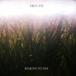

Music Reviews
-
Veronica Falls Waiting For Something To Happen
The goth-pop outfit take a turn into the light that doesn't aim high enough to please, but succeeds enough not to offend.
Forrest Cardamenis is... -

Kitty D.A.I.S.Y. Rage EP
Tumblr rapper embraces the playful side of life, papering over a lack of rapping ability with wit, individuality, and a bevy of pop culture references.
Richard Petty reviews... -
Unknown Mortal Orchestra II
No longer just a strange, lo-fi pop curiosity, Unknown Mortal Orchestra's sophomore album exhibits band and songwriting growth in both its strongest and weakest areas.
Peter Quinton never thought he'd refer to his cart pushing days in a review, but oh well -
Torres Torres
Mackenzie Scott appears as if she's been to this rodeo before. Impressive work for a very young artist self-releasing her first album.
Randi Dietiker reviews... -

Coheed and Cambria The Afterman: Descension
Coheed & Cambria have long been one of my favorite bands. Personally, I've had multiple grievances with their past two LPs, particularly last October's The Afterman: Ascension. However, with the second part of their sprawling, two-part concept album, I was curious to see if the band could finally turn things around.
Claudio Sanchez is the George Lucas of my adolescent musical taste... -

Grouper The Man Who Died in His Boat
Grouper's distinctive engagement with the subliminal possibilities of music is honed into a more approachable song-based form, reminding us that she's one of the most fascinating figures in experimental music.
Stephen Wragg reviews... -

Hilly Eye Reasons To Live
As a former member of Titus Andronicus, Amy Klein has a pretty substantial punk pedigree. But can she deliver a quality album of her own?
Andrew Ciraulo reviews... -

My Bloody Valentine mbv
After a twenty two year wait, the follow-up to 1991's much-celebrated Loveless by influential Irish shoegazers My Bloody Valentine is very much its spiritual successor, one that wallops a big punch without aggrandizing its past resources.
Juan Edgardo Rodríguez was seven when Loveless was released... -

Esben and the Witch Wash the Sins Not Only the Face
With a name like that (lifted from a Danish fairytale, fact-fans!) it's no surprise that Esben and the Witch are fully immersed in the gothic-end of the musical spectrum, but can they maintain the interest on this second album of darkness and drama?
Mark Davison paints it black... -
Umberto Confrontations
Classically trained musician and film score composer Matt Hill returns with his fourth LP via Not Not Fun; the follow-up to last year’s Night Has A Thousand Screams, recorded for Mogwai’s Rock Action label.
Matt Bevington reviews...